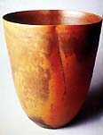
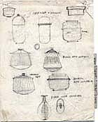
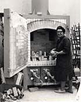
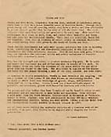
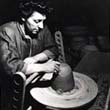
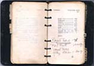
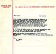

| Laura Andreson Papers
From the Smithsonian
Archives of American Art
Laura
Andreson was a distinguished American studio potter and teacher.
In 1934 she established the ceramics program at UCLA, where she
taught for 36 years, from 1933-70. She initially made low-fired
earthenware, but turned to reduction-fired stoneware in 1948 and
porcelain in 1957. Andreson retired from teaching in 1970, but continued
to make minimalist vessels with a Scandinavian influence.
The following text and images appear as part of Digging
for Clay in the Archives of American Art and are reproduced
here with kind permission of the Smithsonian
Archives of American Art.
Laura Andreson (1902–1999) had a long and distinguished career
at the University of California, Los Angeles, where she taught ceramics
from 1933 until her retirement in 1970. She was known for her research
and testing of glazes and for her innovative firing practices.
While porcelain was her preferred medium, her method of forming
a vessel began with the glaze. In an interview conducted for the
Archives of American Art in 1981, Andreson noted: “…when
I get a good glaze, then I think, well now, what would be the appropriate
form for this to be placed on? Would it be a thin pot or would it
be a thick pot? I visualize the pot after I have the glaze.”
|  |
 |
 |
| Pencil sketches
of pots by Andreson, ca. 1961. |
Andreson unloading
a kiln at UCLA, ca. 1962. |
An appreciation
of Vivika and Otto Heino by Andreson |
Andreson’ s personal
papers, donated to the Archives by Pauline Blank between
1991 and 1996, include her correspondence, lecture notes, photographs,
nine note-books containing glaze and clay recipes, and printed material.
|  |
 |
 |
| Laura Andreson
(1902-1999) trimming a pot, ca. 1940 (reproduction). Photograph
by Imogen Cunningham. |
Andreson's Glaze
Book # 7, ca. 1939. |
A letter from
another California ceramist, Beatrice Wood, commenting on the
Heinos, November 5, 1979. |
© Smithsonian Archives
of American Art
More Articles
|
{kind=link}
{kind=link}
{kind=link}
{kind=link}
{kind=link}
{kind=link}
{kind=link}